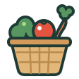

Recettes de saison · design system
Un carnet qui suit le calendrier
Fond papier gris-vert, encre aubergine, et un seul accent qui change avec la saison. La frise des 12 mois, empruntée au dos des sachets de graines, est la signature : on la retrouve de la carte au calendrier.
Couleurs
Base · clair
L’accent suit la saison (clair, puis sombre)
Automne · potimarron
Hiver · chou rouge
Printemps · petit pois
Été · tomate
Automne · sombre
Hiver · sombre
Printemps · sombre
Été · sombre
Saisons : hiver = déc. à févr., printemps = mars à mai, été = juin à août, automne = sept. à nov. Tous les textes passent l’AA (4,5:1), les bords et icônes au moins 3:1.
Typographie
Espacements, rayons, cibles
Rayons : 3–6 cases de frise · 14 champs · 16–20 cartes et slots · 22–24 chips et boutons · 26 feuilles.
Cibles tactiles 44 px minimum (chips, icônes, onglets), boutons principaux 48 px. Marges latérales 20 px sur téléphone.
Composants
Frise 12 mois — la signature
Hauteur remplie = part des légumes de la recette qui sont de saison ce mois-là. Cadre = mois en cours. L’information passe par la hauteur, jamais par la seule couleur ; chaque frise porte un texte alternatif.
Badge de saison (mois en cours)
De saison En partie de saison Hors saison Toutes saisonsScore ≥ 0,75 · 0,25 à 0,74 · < 0,25 · aucun légume saisonnier (joker). Forme du pictogramme + texte : jamais la couleur seule.
Chip légume
Défaut · de saison ce mois · choisi · à retirer · lecture · ajout perso.
Boutons
Carte recette
Soupe panais-carotte au gingembre
Panais, carotte, oignon, gingembre
Illustration produit

163 illustrations dessinées pour l’app (fruits, légumes, aromates, viandes, poissons et fruits de mer, garde-manger) : contour épais vert-de-gris #1E3B36, aplats francs, un reflet blanc. Un ingrédient perso reçoit l’illustration la plus proche (« potimarron » → potiron, « cèpe » → champignon), sinon le panier ; on peut la changer. En sombre, posée sur une assiette claire. Tailles 28, 40, 64.
Slot de repas
Pas de recette disponible
Mouvement
Peu de mouvement, et toujours pour dire ce qui a changé. Sous prefers-reduced-motion, tout devient un fondu de 120 ms sans déplacement.